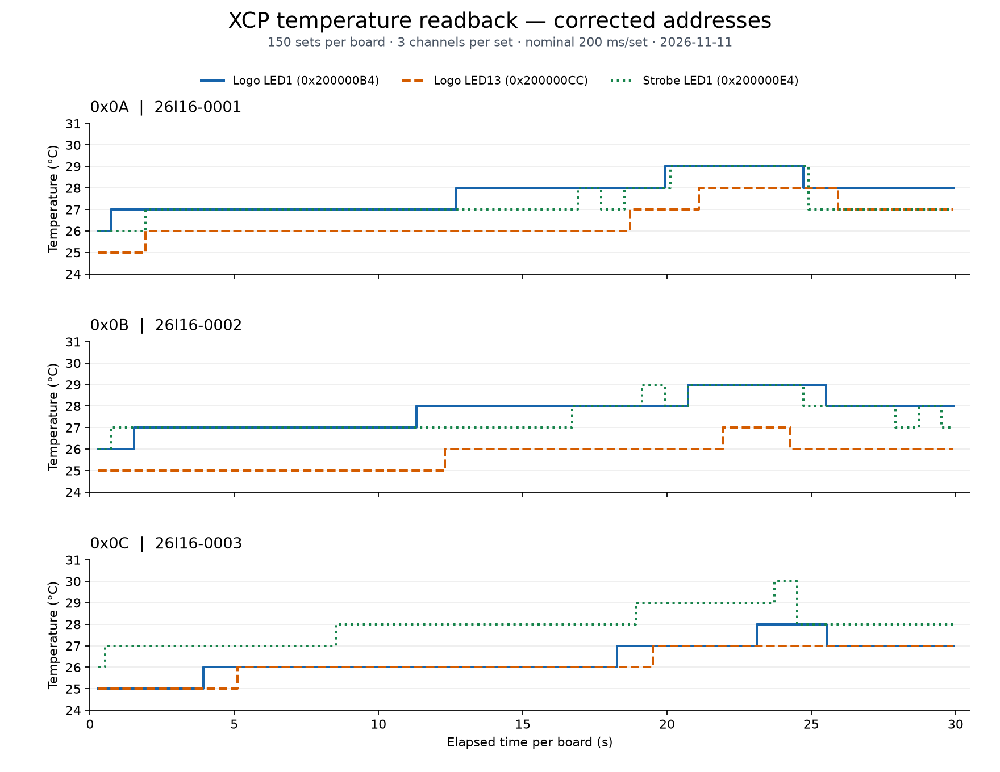

2026-11-11 · 전체 LED 장착 보드 · 프로그램 코드 수정 없음
요청 범위 시험 및 지정 BIN 업데이트 완료
사용자 지정 플리커 시간 허용범위 ±2ms를 적용했습니다. XCP 주소를 정정해 세 보드 모두 다시 검사했고, 최종 업데이트 후 색상·진단·XCP·플리커를 재확인했습니다.
| ID | 제품 번호 | XCP | 일반 플리커 | 일반 Fade | 업데이트 전 자동검사 | 지정 BIN 업데이트 |
|---|---|---|---|---|---|---|
| 0A | 26I16-0001 | 150세트 / 정상 | 108조건 / 통과 | 36조건 / 통과 | 114판정 + 696상세 / 통과 | 1회 / CRC·APP 복귀 확인 |
| 0B | 26I16-0002 | 150세트 / 정상 | 108조건 / 통과 | 36조건 / 통과 | 114판정 + 696상세 / 통과 | 1회 / CRC·APP 복귀 확인 |
| 0C | 26I16-0003 | 150세트 / 정상 | 108조건 / 통과 | 36조건 / 통과 | 114판정 + 696상세 / 통과 | 1회 / CRC·APP 복귀 확인 |
| ID | Logo LED1 0x200000B4 | Logo LED13 0x200000CC | Strobe LED1 0x200000E4 | OSP 통신 오류 카운터 증가 [Logo, Strobe] |
|---|---|---|---|---|
| 0A | 26~29℃ | 25~28℃ | 26~29℃ | [0, 0] |
| 0B | 26~29℃ | 25~27℃ | 26~29℃ | [0, 0] |
| 0C | 25~28℃ | 25~27℃ | 26~30℃ | [0, 0] |

XCP 원시 샘플 CSV · 일반 동작 플리커 측정 CSV
CJ_App_mass_OnlyStrobe_20261111.bin · 29,688byte · 128byte 단위 232블록/보드
CRC32 1567E1F4
SHA-256 534cac48edeb1978f82171d25da766f70826c45ce93fbe185a045244b8630c1a
실제 LIN 송신 프레임에서 다운로드 데이터를 다시 조립해 세 보드 모두 지정 BIN과 바이트 단위로 일치함을 확인했습니다. 각 보드의 Flash CRC 승인, APP 복귀, 제품 정보 유지, 복원 횟수 미증가를 확인했습니다.
이전 일반 시험에서 0C LH Open이 1회 수신되었습니다. 이번에는 해당 30Hz·50% 조건을 5차례 반복한 뒤 0C 전체 플리커·Fade를 재검사했고, 업데이트 후 확인에서도 재발하지 않았습니다. 이전 Open의 원인이 해결되었다고 단정하지 않습니다. 앞서 확인한 2ms 편차는 사용자 허용 기준으로 처리했으며 프로그램을 수정해 제거한 것은 아닙니다. 과거 펌웨어를 다시 설치하는 A/B 비교는 수행하지 않았습니다.
PC 원본 검사 로직을 화면 없이 콘솔 어댑터에서 실행했습니다. 그래프는 실제 수신값으로 생성한 결과이며 PC 프로그램의 그래프 화면을 조작·검증한 것은 아닙니다. 플리커는 MCU 내부 계측으로 확인했고 광학 계측은 하지 않았습니다. 현재 프로젝트 XCP는 읽기 전용이며 Write 검증은 UDS 설정값에 대해 수행했습니다.
최종 세 보드: APP 정상, 진단 고장 비트 0, 전체 LED OFF 읽기 확인. 시험용 LIN 연결 해제(기존 PC 연결 유지). 소스/설정 744개 파일 해시와 지정 BIN 해시가 시험 전후 동일합니다.
작업 경로: D:\jhhan\program\CJ_OneBoard\Program\납품\CJ_Git_20261111
원시 로그 및 통합 결과: validation/FullBoardRetry_20261111_1000_*
앞선 검사 기록: validation/FullBoard_20261111_092853_*